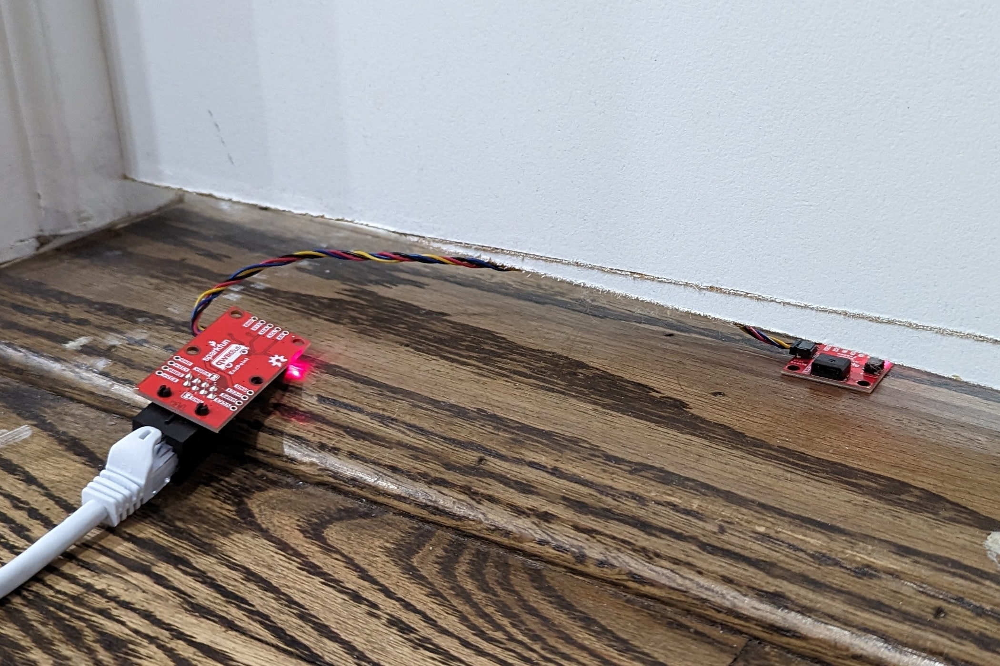
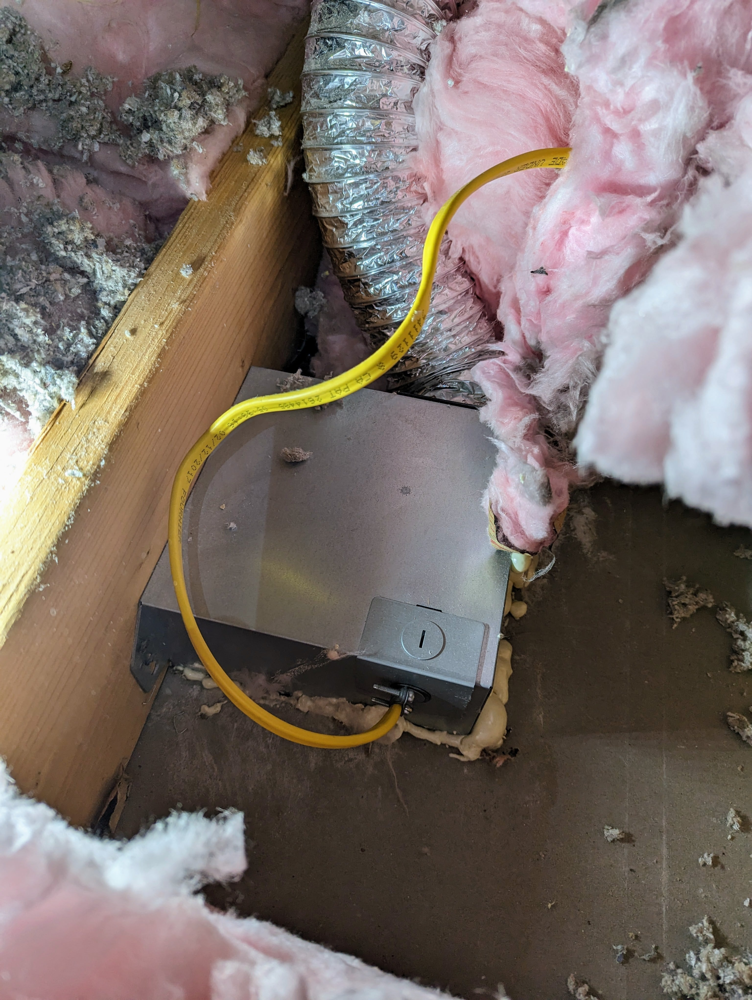
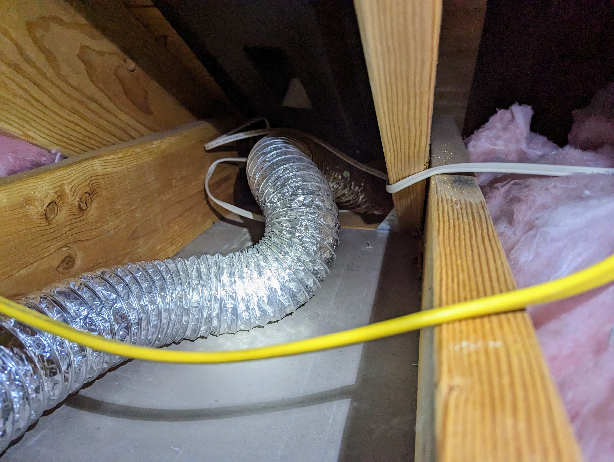

Quantifying New Exhaust Fan Performance with Data from ESPHome
Written on March 26th, 2023 by Kevin Ahrendt
Introduction
Our home’s original master bathroom exhaust fan could not remove all excess moisture when showering. The mirror would fog over almost completely, and water would condense on the walls near the ceiling. We replaced the fan, and I wanted to quantify and test whether the new fan was an improvement. I gathered summary statistics from an air velocity sensor placed under the closed bathroom door using ESPHome. I then used a t-test to determine whether the changes indicated an improvement. The new fan and ducting show a statistically significant improvement, and (most importantly) moisture does not accumulate.
The bathroom is 83 square feet, and the previous exhaust fan was rated to exhaust 50 Cubic Feet of air per Minute (CFM). While this meets the local Residential Code, a common rule of thumb recommends 1 CFM per square foot. We replaced the old bathroom fan with a Panasonic FV-0511VF1. While this was an improvement compared to the original fan, it still did not eliminate the moisture issues. We improved the fan’s performance by straightening out the duct in the attic instead of immediately making a sharp turn in the attic. We then replaced the previous 3-inch ducting with an insulated 4-inch duct while also properly terminating the duct with an appropriate vent. For comparison, the old duct end simply rested on the vinyl soffit. Finally, we increased the exhaust rate setting on the new fan from 50 CFM to 110 CFM, eliminating the moisture build-up.
Experiment Setup
I used an FS3000 air velocity sensor to quantify the exhaust rate with each change to the setup. I placed the air velocity sensor under the closed bathroom door and turned on the fan. I wrote a custom component to interface the sensor with ESPHome to easily collect the data. (My pull request has since been accepted, and ESPHome now supports the sensor natively.) The sensor measured the air velocity once per second. Additionally, I calculated the standard deviation over 60 measurements (1 minute) of the air velocities using the filter code detailed in this post. I also collected the minimum, maximum, and average air velocity over the previous 60 measurements using built-in ESPHome sensor filters. See the ESPHome Sensor YAML section section at the end of this post for the specific configuration details. After waiting several minutes to ensure the fans were up to full speed, I recorded the data.
 FS3000 sensor placed under the door. Also pictured is a Qwiicbus endpoint to use an ethernet cable for I2C communication.
Conclusions
We use the measured air velocity underneath the bathroom door as a proxy for the amount of air the bathroom fan exhausts. Replacing the old bathroom fan with the Panasonic fan resulted in a significant improvement without modifying the ducting. Straightening the duct also resulted in a significant increase in the amount of air exhausted.
Replacing the 3-inch duct without termination with a 4-inch duct terminated with a soffit vent reduced the air exhausted by a statistically significant amount. The decrease is minimal in practice, resulting in an average under-door velocity decrease of only 0.04, or a 4.3% reduction. While the larger duct, in theory, should improve the amount of air exhausted, it appears that the soffit vent termination causes the reduction. This fan increases its power to counteract duct resistance to achieve the set CFM level. Since the duct length is short (approximately 3 feet), the fan seems to be able to compensate for the difference between a 3-inch duct and a 4-inch duct. Replacing the duct and terminating it with a vent reduced the fan’s noise significantly, which indicates that the fan did not need to work as hard despite having the soffit vent present. This reduction is acceptable, as no ducting termination is problematic long-term for the house’s structure. Previously, the moist air was not fully exhausted, as a large fraction of moisture remained in the attic. Before terminating the duct, a humidity sensor in the attic showed an increase whenever the exhaust fan ran during a shower. After adding the terminating vent, there is no increase in attic humidity levels when the fan runs during a shower.
Finally, as expected, increasing the fan’s setting to 110 CFM from 50 CFM resulted in a significant improvement. At 110 CFM, this exceeds the rule-of-thumb of having 1 CFM per square foot. When set to the 50 CFM setting with the new fan and ducting, we still experienced mirror fogging and moisture condensing on the walls. After changing the setting, this is no longer a problem.
Data
| Average \(\left(\frac{\text{m}}{\text{s}}\right)\) | Minimum \(\left(\frac{\text{m}}{\text{s}}\right)\) | Maximum \(\left(\frac{\text{m}}{\text{s}}\right)\) | Standard Deviation \(\left(\frac{\text{m}}{\text{s}}\right)\) | |
|---|---|---|---|---|
| Fan Off | 0.02 | 0.00 | 0.04 | 0.01 |
| Old Exhaust Fan 50 CFM 3 inch duct, kinked no soffit termination |
0.66 | 0.62 | 0.66 | 0.01 |
| New Exhaust Fan 50 CFM 3 inch duct, kinked no soffit termination |
0.77 | 0.74 | 0.81 | 0.03 |
| New Fan 50 CFM 3 inch duct, straightened no soffit termination |
0.92 | 0.86 | 0.99 | 0.03 |
| New Fan 50 CFM 4 inch duct terminated with soffit vent |
0.88 | 0.86 | 0.91 | 0.01 |
| New Fan 110 CFM 4 inch duct terminated with soffit vent |
1.51 | 1.48 | 1.58 | 0.02 |
Statistical Testing
Due to this project taking a long time, I collected most of these summary statistics on different days with different ambient weather conditions. There could have been a more pronounced natural draft, but I only gathered the first three rows of data on the same day. I did not account for this potential confounding factor.
We use a one-sided, two-sample t-test comparing the difference between the mean air velocities to test whether there are significant increases or decreases after changing the setup. The sample size is 60, as the summary statistics reflect a 60-observation sliding window. The t-test helps us determine whether there is evidence to support if the upgrades increased the air velocity underneath the door. We assume the measured air velocities follow a normal distribution when using a t-test, which may not be appropriate. A better approach is to record the observed air velocities for all 60 measurements instead of the summary statistics. Then, we would use a Kolmogorov-Smirnov test, which does not assume the samples’ observations follow a specific distribution.
Comparing the Old Exhaust Fan sample with the New Exhaust Fan sample with the same rated 50 CFM and kinked 3-inch duct, we get a p-value of less than 0.0001. There is strong evidence that the new exhaust fan resulted in a higher under-door air velocity.
Comparing the samples for New Exhaust Fan with the 3-inch duct kinked or straightened, we get a p-value of less than 0.0001. This is strong evidence that straightening the duct increased under-door air velocity.
Comparing the samples for the New Exhaust Fan with a straightened 3-inch duct without termination versus a 4-inch duct with soffit termination, we get a p-value of less than 0.0001. There is strong evidence that replacing the 3-inch duct without termination with a 4-inch duct with a vent termination reduced the under-door air velocity.
Comparing the samples for the New Exhaust fan set to 50 CFM versus 110 CFM, the p-value is less than 0.0001. This is strong evidence that the fan setting modification increased the under-door air velocity.
Photos
 The old exhaust fan with insulation cleared. The exhaust duct is kinked immediately after leaving the fan. It was present before the insulation was pulled aside and after putting it back.
 The old 3 inch duct without any sharp kinks immediately after leaving the fan. It has no termination in the soffit bay.
ESPHome Sensor YAML
sensor:
- platform: fs3000
name: "Velocity"
id: velocity_mps
i2c_id: qwik_bus
model: 1005
update_interval: 1s
- platform: copy
name: "Velocity Average (1 min)"
source_id: velocity_mps
filters:
- sliding_window_moving_average:
window_size: 60
send_every: 15
- platform: copy
name: "Velocity Maximum (1 min)"
source_id: velocity_mps
filters:
- max:
window_size: 60
send_every: 15
- platform: copy
name: "Velocity Minimum (1 min)"
source_id: velocity_mps
filters:
- min:
window_size: 60
send_every: 15
- platform: copy
name: "Velocity Standard Deviation (1 min)"
source_id: velocity_mps
filters:
- lambda: |-
// max measurements to store for computing standard deviation
const uint8_t window_size_ = 60;
// compute and send the standard deviation after this many measurements
const uint8_t send_every_ = 15;
static std::deque<float> queue_;
static uint8_t send_at_ = 0;
// If we have more entries in queue_ than the window_size_,
// then pop them off
while (queue_.size() >= window_size_) {
queue_.pop_front();
}
// add the newest reading to queue_
queue_.push_back(x);
if (++send_at_ >= send_every_) {
send_at_ = 0;
float Ex = 0.0;
float Ex2 = 0.0;
size_t count = 0;
float K = queue_.front();
for (auto v: queue_) {
if (!std::isnan(v)) {
// Welford's algorithm to avoid catostrophic cancellation
// - This is achieved by subtracting the oldest reading from
// each measurement. If not done, then the sum of the
// measurements squared and the square of the measurements
// summed may be quite large, and their difference can be
// problematic resulting in catostrophic cancellation
// counts valid measurements
count += 1;
// sums the measurement minus the oldest reading
Ex += v - K;
// sums the measurement minus the oldest reading squared
Ex2 += pow(v-K,2);
}
}
float standard_deviation = NAN;
// If we have at least one valid reading, then compute the
// variance and standard deviation, otherwise it will remain NAN
if (count) {
float variance = (Ex2 - pow(Ex, 2)/count) / (count-1);
// standard deviation is the square root of the variance
standard_deviation = sqrt(variance);
}
return standard_deviation;
}
return {};